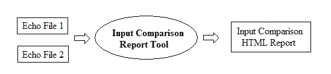

| FRAMES NO FRAMES |
| Introduction |
|---|
|
DSM2 input files are isolated in different places based on input categories and properties. DSM2 summaries all the input files and gather them into one single echo file. Hence, input comparison can be easily done by using text difference tools since DSM2 echo files are in text format. Those types of tools usually precisely point out where the differences are. However, it tends to return redundant differences that come from extra space, tabs, and lines. DSM2 modifier particularly causes the most redundancies since it is a variable globally replaced and differs from one scenario to another. Also, it only points out which lines have been changed but not tables, such as channel, reservoir or cross section. The input comparison tool developed here reads DSM2 input files and prints out summary table which shows the number of additional records in either study as well as the number of modified records. The details are presented and grouped by table properties. The tool filters out the changes from DSM2 modifier and shows the actual changes between two files. |
| Setup |
|
 |
| Examples |
|
A sample input comparison report is shown as below. On top of the page, there is a summary table which points out how many extra records in echo file 1,
how many extra records in echo file 2, and how many modifications between two echo files by each category. |
| FAQ |
|
|